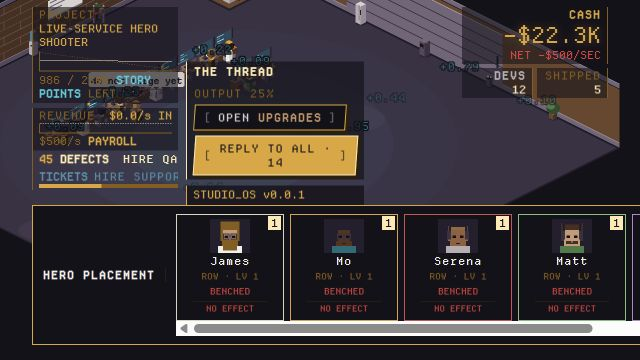
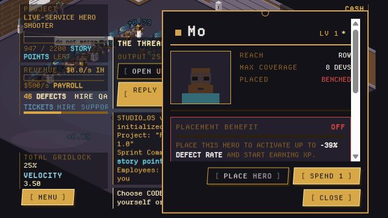
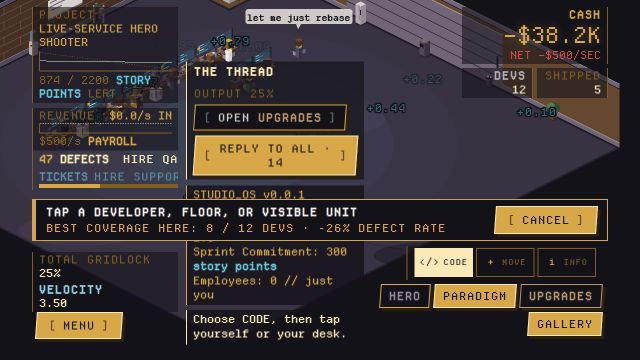
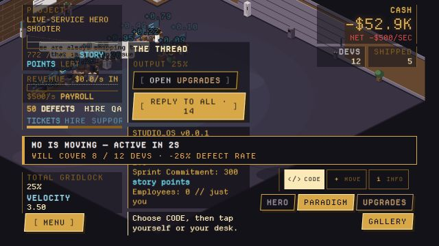
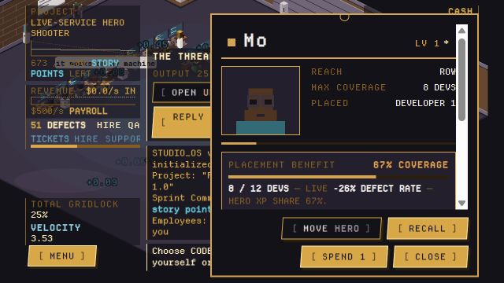
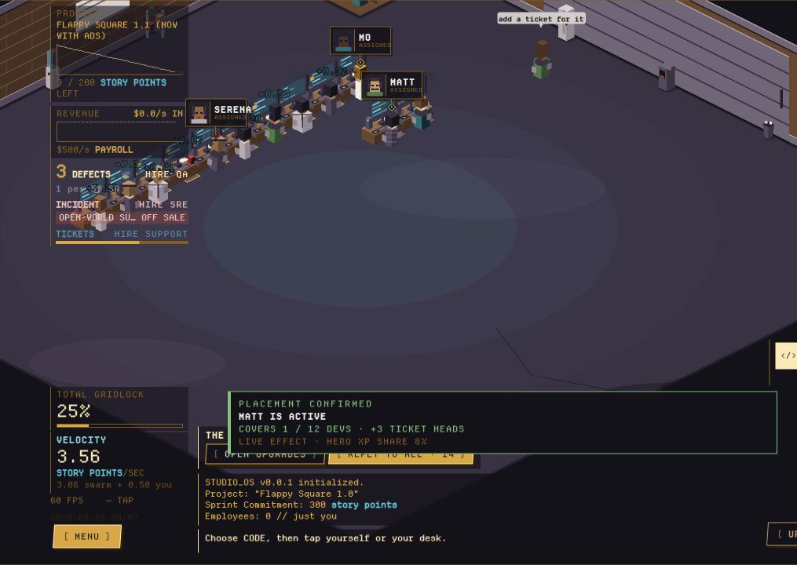
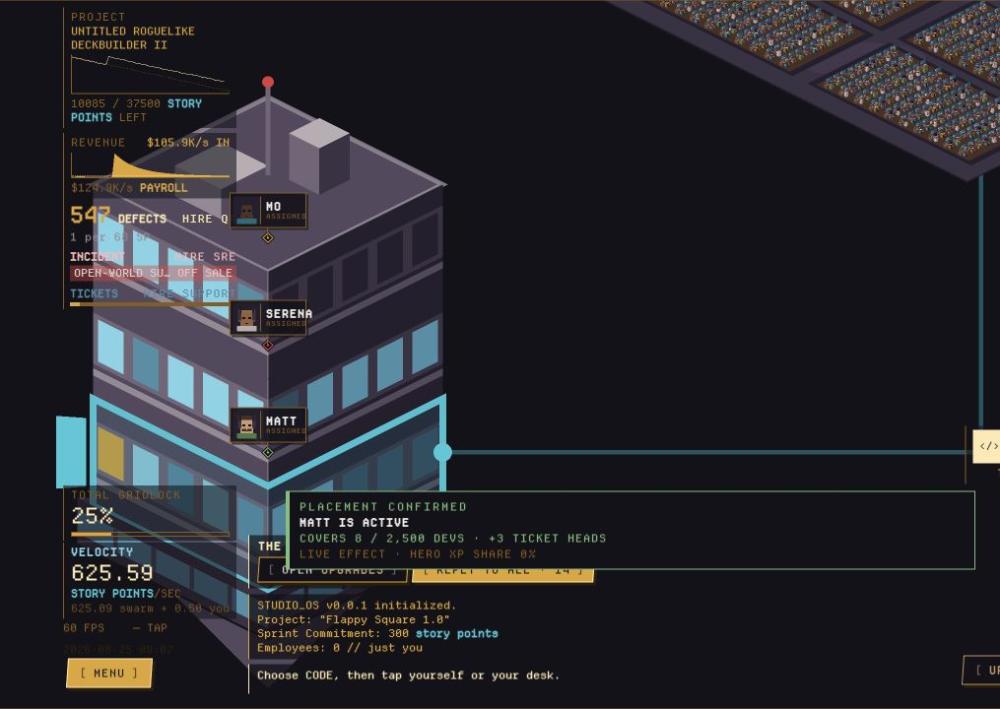
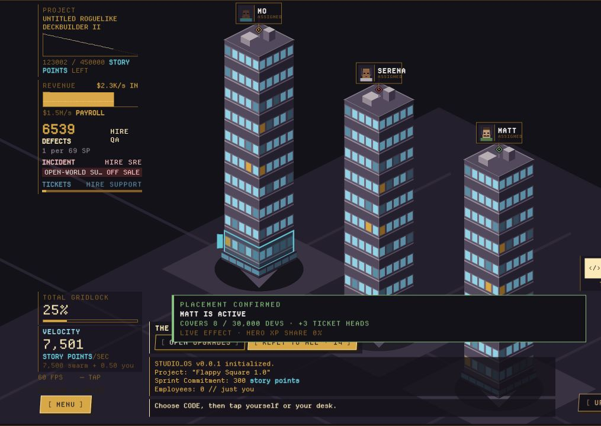

Keep The entropy thesis
The fifth-power coordination curve creates the game’s most distinctive decision: another hire can reduce total output. Founder immunity and the catastrophic first-run demonstration reinforce that thesis.
100,000,000 Developers // archived implementation audit
A preserved internal snapshot of what the 25 August 2026 build did: the growth loop, upgrades, prestige, heroes and placement—plus the implementation gaps, pressure points, and smallest useful experiments for making it more fun.
Archived backup This page is retained as a mechanics audit and UI-demo record. It is not the development authority. Use GDD.html for canonical design, current implementation status, priorities, and future adjustments.
The coherent core is scaling output without scaling communication faster than the organisation can bear. Hiring raises raw production and payroll; communication load reduces every developer’s efficiency. Infrastructure, permanent founder skills, Paradigm nodes, specialist roles, and heroes push the breaking point outward. The main design work now is not adding another layer—it is making the existing choices legible, internally consistent, and meaningfully different.
Core rule Headcount is not the same thing as useful output. The best base output occurs around 75.8% of effective capacity. At the exact capacity line, efficiency is already only 50%. Capacity is a warning boundary, not a hiring target.
The fifth-power coordination curve creates the game’s most distinctive decision: another hire can reduce total output. Founder immunity and the catastrophic first-run demonstration reinforce that thesis.
Several labels and cards describe effects the runtime does not deliver, while a few mechanics use inconsistent scaling rules. Those truth problems should be fixed before interpreting balance feedback.
The next tuning pass should measure whether each run regularly offers one immediate purchase, one strategic fork, and one aspirational target—without hiding the consequences of hiring or placement.
Cash, current staff, roles, live catalogue, backlogs, incidents, events, hero placements, and the cash-bought studio tech board.
Bandwidth Points and Paradigm nodes. These survive ordinary shifts and mainly increase capacity or alter system rules.
Founder skills, hero XP, hero nodes, story arrivals, milestones, release history, and lifetime high-water marks.
Growth is a repeated balancing act between capacity, cash flow, and coverage. If one of those lags, more staff stop being an upgrade.
Later runs skip the garage funnel. They open with two salary-free heads, the batch-hire dial and seed state already unlocked, a paid project instead of the $50 game, and James granting Instant Messenger at the centre of the studio upgrade board. The first shift also activates offline production and the post-garage quality/reliability/support simulation.
Permanent Paradigm nodes establish the base capacity. Protocol tech and Cloud hero depth multiply it inside the current run. This determines communication load.
A hire also has an escalating purchase price and a permanent wage. Catalogue income must cover payroll long enough for the next project to finish.
Once their heroes arrive, hires can be assigned to development, QA, support, or SRE. A role is chosen on hire and cannot be reassigned.
Heroes only contribute after being posted into the world. Their reach limits how much of the studio they affect and how quickly they learn.
Practical warning Do not wait for the displayed capacity to become full. At 100% load, the company has lost half its per-person efficiency; the production optimum has already passed.
The raw swarm wants to make one Story Point per developer per second. Communication load taxes that rate according to headcount divided by effective capacity.
Effective capacity is the permanent Paradigm capacity multiplied by in-run protocol upgrades and the active Cloud-hero fold. Pair Programming and Daily Standups can reduce the number of people actually coding without reducing the number creating communication load.
| Entropy | Player-facing label | Meaning |
|---|---|---|
| 0–1% | IN SYNC | The studio is near full individual efficiency. |
| 1–10% | CHATTY | The first visible warning; Run 1 reaches it around 40 people. |
| 10–40% | BOGGED DOWN | More hiring needs to be justified by capacity upgrades. |
| 40–70% | PRODUCTIVITY BREAKDOWN | Raw headcount is masking severe per-person loss. |
| 70–90% | TOTAL GRIDLOCK | The studio is deep on the falling side of the curve. |
| 90–99% | MELTDOWN | Output is collapsing toward zero while payroll stays linear. |
| 99%+ | STUDIO SEIZED | The game treats the organisation as locked for story and feedback. |
The founder has a separate curve. The base passive rate is 0.5 SP/s; a founder tap banks two seconds of that rate. Neither headcount nor Communication Entropy can tax it. Founder upgrades can raise it to 5.5 SP/s, make the taps cleaner, attach cash, allow offline work, and spread taps into nearby rows—but even a maxed founder must remain weaker than a healthy studio.
Poking is not a second currency faucet. It is a short-term maintenance layer: read the target, create an immediate pulse, and leave most of the value as a fading production buff.
The baseline tier is 1 SP. Cash upgrades raise it through 1, 2, 3, 5, 8, 13, 21, then the sequence continues procedurally. The current studio tree implements tiers through 8 SP per poke.
| State | Multiplier | What the poke does |
|---|---|---|
| Working | ×1 | Normal payout; the work state continues. |
| Slacking | ×0.5 | Lower payout and returns the developer to work. |
| Flow | ×3 | A critical payout, but the poke ends Flow unless Nitro Cold Brew is owned. With the upgrade, it extends Flow by five seconds. |
| Overwhelmed | ×0 | No points; the value is clearing the developer’s lockup. |
| Rogue | ×−2 | Removes Story Points but cancels the rogue refactor. Zero-Trust Architecture prevents this state entirely. |
| 10x Engineer | ×10 | Large critical cash-out; the developer quits when poked. James cannot be lost this way. |
A tap affects the unit under the pointer, not an abstract camera band. Larger units reach more people but pay less per person. The live curve is anchored at one person (×1.0), 14 people (×0.4), 5,000 people (×0.08), and one million people (×0.01), interpolated between anchors. This creates the intended rhythm: zoom in to extract value from a person; zoom out to maintain a whole unit.
| # | Project | Commitment | Total payout | Role in progression |
|---|---|---|---|---|
| 1 | Flappy Square 1.0 | 300 SP | $50 | Garage joke; cannot support a salary. |
| 2 | Flappy Square 1.1 (Now With Ads) | 200 SP | $1,500 | Still below the paid-studio wage line. |
| 3 | Flappy Square 2.0 (Now With A Battle Pass) | 300 SP | $12,000 | Final salary-free catalogue rung. |
| 4 | Untitled Roguelike Deckbuilder | 600 SP | $38,000 | First project that can sustain paid staff. |
| 5 | Cozy Farming Sim With A Dark Secret | 900 SP | $110,000 | Early studio scale. |
| 6 | Open-World Survival Craft (Early Access) | 1,400 SP | $320,000 | Mid-run cash engine. |
| 7 | Live-Service Hero Shooter | 2,200 SP | $900,000 | Late authored rung. |
| 8 | Untitled Roguelike Deckbuilder II | 3,500 SP+ | $2,600,000+ | Terminal rung. Commitment and payout scale to target roughly 60 seconds per build. |
The displayed payout is the release’s total lifetime value. It enters the treasury through a randomised launch spike and a slower tail: 50–68% is assigned to the spike, with a 4–8 second time constant; the rest uses a 30–70 second tail. A release retires after 240 seconds and pays any tiny remainder exactly. The catalogue therefore funds payroll while the next game is being built.
The Run 1 growth base is 1.08. At larger permanent capacities the effective growth base is normalised by capacity, preventing absolute headcount from creating a second wall before Communication Entropy. The permanent founder node You Know A Guy halves the growth step per level before that normalisation.
The batch dial appears at 25 staff and always shows three scale-appropriate batch sizes plus MAX. MAX preserves 10% of the treasury. The Run 1 Mass Hire is a separate scripted action: James’s scene forces it and it takes everything.
Run-killer Communication collapse and payroll reinforce each other: less efficiency delays the next ship while wages continue at full speed. The dangerous hire is not merely expensive to buy—it extends the time before the company can earn again.
After the first shift, post-garage systems are simulated. Their instruments and hireable roles appear with the hero who explains them. Every specialist still adds to headcount, communication load, hiring cost, and payroll. Roles are permanent for that run once hired. In the current velocity calculation, however, total headcount is still used as the productive body; choosing QA, SRE, or Support therefore adds the specialist benefit without subtracting that person from base coding output.
Design decision needed Either specialists are intentionally hybrid contributors—in which case the UI should say so—or role assignment needs a visible production opportunity cost. The current version presents a staffing allocation choice but calculates it mostly as an additive bonus.
| Role | Unlocked by | Current effect | Key number |
|---|---|---|---|
| Developer | Always | Contributes to the studio’s production body. | 1 raw SP/s |
| QA | Mo | Reduces defect arrival. Defect rate is halved when QA are 25% of staff. | factor = 1 / (1 + QA share / 0.25) |
| SRE | Serena | Reduces incident arrival and clears open incidents linearly. | 10% SRE halves arrivals; 45 SRE-sec to clear |
| Support | Matt | Answers tickets linearly and protects catalogue income. | 1 ticket/sec per head |
Ordinary work creates defects at 0.02 per Story Point before QA suppression. Immediate poke output is charged at twice the ordinary defect density because interruption adds the same 0.02 context-switch coefficient. On ship, the defect backlog becomes a permanent density attached to that release and the bench resets.
Release rating is weighted 50% defects, 30% hero coverage, and 20% craft. The present shipping path currently supplies zero to the hero-coverage rating input, so hero placement affects production systems but does not yet raise release scores. A release’s rating can scale its payout from ×0.55 to ×1.6; reputation remembers roughly eight releases and adds a standing ×0.8 to ×1.25 multiplier.
Shipped defect density creates incident risk in proportion to the release’s current audience. A release at garage density creates about 0.1 incident over its tracked lifetime without SRE. An open incident freezes that release’s revenue tail until cleared; it delays money rather than destroying it.
Tickets arrive from the lifetime catalogue and outstanding defects. Ten shipped games or 100 defects each create enough work for one support head. If clearance time exceeds five minutes, catalogue income falls, down to a hard floor of 80%. The current project payout itself is not reduced by the ticket queue.
The studio board has two live branches: Communication Protocols and Culture & Juice. Purchases use current-run cash and reset on every Paradigm Shift. A new ring opens with each shift.
Every current node has one purchasable level, so the prestige term is the main live price escalator. Costs below are base costs before that term.
| ID | Upgrade | Ring | Requires | Base cost | Live effect |
|---|---|---|---|---|---|
| B1 | Instant Messenger | 0 | Granted by James | Free | −5% communication load, implemented as ×1/0.95 capacity. |
| B2 | Daily Standups | 1 | B1 | $2,500 | Entropy cannot exceed 80%. Every 60 seconds, 20% of the studio stops coding for five seconds. |
| B3 | Pair Programming | 2 | B2 | $75,000 | Only half the studio codes; communication load falls 60% (×2.5 capacity); every release earns ×2. |
| B4 | JIRA Ticket Flooding | 3 | B3 | $10,000,000 | Entropy cannot exceed 60%. |
| B1a | Written Culture | 2 | B1 | $600,000 | −25% communication load, implemented as ×1/0.75 capacity. |
| B1b | Microservices | 3 | B1a | $4,000,000 | −35% communication load, implemented as ×1/0.65 capacity. |
| ID | Upgrade | Ring | Requires | Base cost | Live effect |
|---|---|---|---|---|---|
| C1 | Nitro Cold Brew Drips | 1 | — | $100 | Poking a developer in Flow no longer ends it; instead it adds five seconds. |
| C2 | Ergonomic Chairs | 2 | C1 | $10,000 | Overwhelmed lockups last 30% less time. |
| C2a | Four-Day Week | 3 | C2 | $1,500,000 | Halves the remaining Overwhelmed duration again and multiplies release revenue by 1.15. |
| C6 | Sandbagging | 2 | C1 | $2,000 | Raises the poke estimation tier from 1 to 2 SP. |
| C7 | Planning Poker | 3 | C6 | $250,000 | Raises the poke estimation tier to 3 SP. |
| C8 | Velocity Inflation | 4 | C7 | $80,000,000 | Raises the poke tier to 5 SP and makes the displayed velocity read 10% higher. |
| C9 | Consultant Estimates | 5 | C8 | $400,000,000 | Raises the poke tier to 8 SP and takes 10% of all release revenue. |
| C10 | Definition of Done (Ambiguous) | 6 | C9 | $100T | Every project commitment is reduced to 95%, and the burn-down is drawn against that smaller total. |
Daily Standups is a trade, not a universal first purchase. A healthy studio below its optimum does not need an entropy ceiling yet and will still pay the recurring meeting pause. The permanent Meeting Ban node removes that downside while keeping the ceiling.
The founder board opens after the first shift when the player first feels work they personally cannot cover: either the first specialist is hired, or the studio reaches at least 25 staff and the founder contributes under 5% of total output. These nodes cost run cash but their levels are permanent.
| ID | Node | Base cost | Cost growth | Max | Live effect |
|---|---|---|---|---|---|
| M-ENG | Touch Typing | $400 | ×1.9 / level | 10 | +0.5 founder SP/s per level. Also raises founder tap value because a tap banks two seconds of the current rate. |
| M-CLOUD | You Know A Guy | $6,000 | ×6 / level | 12 | Halves the hire-price growth step per level: growth becomes 1 + 0.08 / 2level. |
| M-QA | Reading It Back | $25,000 | One-time | 1 | Founder pokes create 40% less local context-switch load. |
| M-SUP | Founder-Led Sales | $60,000 | One-time | 1 | Founder-produced Story Points also pay $0.20 each immediately. |
| M-REL | Always On Call | $150,000 | One-time | 1 | The founder’s passive desk rate is included in offline production. |
| M-REACH | Management By Walking Around | $500,000 | ×2.4 / level | 3 | A founder tap also buffs one nearby row per level at 40% of the tap’s strength. |
Permanent You Know A Guy is the economic partner to Telepathic Compression. Compression raises how many people the organisation can coordinate; recruiting lowers the price curve enough to fill that capacity. One without the other eventually leaves unused headroom.
The first Paradigm Shift follows bankruptcy. From the second run onward, the Paradigm screen offers a voluntary shift at any non-bankrupt point and shows a live, non-decreasing BP quote.
The active quote takes the maximum of the saved lifetimeRevenue value and current-run revenue, plus the maximum saved/live peak headcount. Despite the field name, save reconciliation treats revenue as a maximum high-water mark, not an additive career total; offline revenue is a separate path that directly increments it. The award is the full formula each shift rather than only the improvement over the prior quote. The current award path also ignores the dormant reputation prestige multiplier.
Persistence defect The shift function calculates BP from the live run, then creates a fresh run without first folding that run’s revenue and peak into the in-memory permanent record. The save immediately written after the reset can therefore discard those marks. Fix this before balancing prestige cadence; otherwise observed BP progression can depend on whether a save was reloaded.
| Node | First cost | Max | Current runtime effect |
|---|---|---|---|
| Async-First Culture | 10 BP | 5 | Each level removes 10 percentage points from the load term. Runtime capacity is base ÷ (1 − 0.1 × level); level 5 doubles capacity. |
| Meeting Ban | 330 BP | 1 | Cancels Daily Standups’ five-second pauses while preserving the purchased entropy ceiling. |
| Zero-Trust Architecture | 12,100 BP | 1 | Eliminates the Rogue Refactorer developer state. |
| Telepathic Compression | 25 BP | 10 | Multiplies base developer capacity by 10 per level in the current runtime. |
| Chained Poke Reaction | 1,100 BP | 3 | Each level buffs one additional neighbouring unit for 50% of the target’s converted 75% buff portion. With valid targets and no clipping, total poke value is roughly ×1.375, ×1.75, or ×2.125. |
Copy mismatch The Telepathic Compression card currently says “+1,000× developer capacity per level,” but the live capacity function uses ×10 per level. This audit reports the runtime result.
The displayed quote improves when the current run beats the inputs remembered in permanent state. In principle, that makes extending a run useful only when it creates a meaningful new revenue or headcount mark. In practice, the persistence defect above and full-formula repeat award make the incentive unreliable and potentially exploitable. After that is corrected, the “BP short” readout can support a clean push-or-reset decision. The shift itself gives no cash, so a fresh run still needs an earning catalogue before aggressive hiring.
The live hero system is a roster of six named people. A “class” is a hero’s home branch and starting position, not a restriction. Every hero can buy into every branch; specialists receive full value at home and half value elsewhere.
Engineering // Jack of all trades
Quality
Reliability
Support
Cloud
Cohesion / Delivery
Identity only today The six named signature traits are shown on hero cards, but their bespoke sentences are not yet read by the simulation. The live mechanical effects come from the shared branch tree and placement coverage described below.
Only placed, settled heroes earn XP. XP is permanent and never spent. A hero’s level is derived from lifetime XP; every level grants one point, including level 1. A benched hero does not lose anything, but gains no new XP.
The first level-up costs 10 XP; cumulative level thresholds are a geometric sum. The technical ceiling is level 999.
After at least one Paradigm Shift, the hero board is introduced when any hero reaches level 2 and still has an unspent point. This guarantees the player has already placed somebody before being asked to buy reach and depth. It also creates a presentational dead-end for specialists: they arrive with their first three home Depth nodes free, so their next home node is Reach at three points; at level 2 they have only two total points and cannot buy it.
First-use friction At the moment the board is taught, a specialist must either buy off-branch Depth, close the new screen without buying, or wait for level 3. The clean fixes are to make the first Reach cost two points, introduce the board at level 3, or change the free starting chain so one one-point home purchase remains.
Engineering is the free centre trunk. Quality, Reliability, Cohesion, Support, and Cloud each have six sequential nodes:
A specialist’s node in their own branch is worth 100%. A Depth node in another branch is worth 50%. James receives 50% everywhere. Reach is a shared count of owned Reach nodes and is not weakened by branch mismatch.
| Branch | Per effective Depth at full-studio coverage | How partial coverage scales it |
|---|---|---|
| Engineering trunk | +3% yield per full effective depth; all current heroes receive half-trunk weight, or +1.5% when fully covering. | Additive inside a multiplicative yield fold. |
| Quality | Defect arrival ×0.85. | Blends the full multiplier toward ×1 by covered share. |
| Reliability | Incident arrival ×0.85. | Blends the full multiplier toward ×1 by covered share. |
| Cloud | +15% capacity. | +15% × depth × covered share. |
| Cohesion | Entropy ×0.9. | Blends the full multiplier toward ×1 by covered share. |
| Support | +1 effective support head. | Current runtime does not scale this by covered share once the hero covers at least one developer. |
Double return Reach increases both a hero’s present effect and the fraction of studio velocity that becomes their XP. A well-placed Reach purchase therefore accelerates its own future upgrade curve.
Placement begins in the hero roster but finishes in the world. A hero is assigned to the same physical unit the player can poke: a seat, floor, building, campus, site, nation, planet, or galaxy. The current interface exposes maximum reach, actual studio coverage, the coverage-scaled branch benefit, and hero XP share. A compact, branch-coloured identity pass now keeps the hero’s head and name attached to the assigned desk, floor, or building.
These are captures of the current game UI, not concept art. Pages 01–05 follow Mo through one placement. Pages 06–08 then show three simultaneous assignments at each world scale: separate desks, separate floors, and separate buildings. Select any image to open its native frame.








| Scene scale | Visible simultaneous assignments | What the player can read immediately |
|---|---|---|
| Room / desks | Mo → Desk 01; Serena → Desk 06; Matt → Desk 12 | Which individual workstations have named owners. |
| Tower / floors | Matt → Floor 01; Serena → Floor 02; Mo → Floor 03 | The vertical distribution of responsibility through the tower. |
| Block / buildings | Mo → Building 01; Serena → Building 02; Matt → Building 03 | Which tower belongs to which hero without reopening HERO. |
Use this compact model to test how the same interaction responds to a different hero, studio scale, Reach tier, or anchor. Press Place hero, then pick a desk; the four readouts separate coverage, branch benefit, and XP share.
The 12 desks stand in for evenly spaced anchors across the current studio. During a move the prior assignment remains live until a new target is clicked; the confirmed walk then creates the real eight-second dead period.
| Reach index | Coverage name | Maximum developers covered |
|---|---|---|
| 0 | Row | 8 |
| 1 | Floor | 1,000 |
| 2 | Building | 10,000 |
| 3 | Campus | 100,000 |
| 4 | Site | 1,000,000 |
| 5 | Nation | 100,000,000 |
| 6 | Planet | 10,000,000,000 |
| 7 | Galaxy | 10,000,000,000,000 |
An unplaced hero earns no XP. Repeated repositioning also creates eight-second dead periods, so movement should solve a real coverage problem.
At room scale, a lower seat index offers a larger catchment. A row-reach hero still caps at eight, but the anchor will not artificially reduce that eight.
A hero covering eight of 10,000 contributes only 0.08% of a full-studio effect and earns XP at the same tiny share. Reach is the answer.
Matt’s support-head contribution is not diluted by studio share once he has any active coverage. He still needs a valid, settled placement, but he is less reach-sensitive than the other specialists in the current runtime.
The ladder doubles as the org chart. When James is placed on a higher rung than another placed hero, the game reads him as being “above” that hero and can trigger his Global Head of His Desk promotion scene. Two heroes on the same rung are peers.
In Run 2+, if the studio reaches 12 developers with an otherwise empty upgrade board, THE THREAD can hold efficiency to 25%. It never expires on its own. The player can clear it with 20 taps, or buy any studio tech upgrade. A tech purchase retires the event permanently for the career; tapping clears only the current occurrence.
Purchased entropy floors beat event ceilings. If the player owns an in-run upgrade that prevents the studio from becoming that inefficient, the event cannot undo it.
The build already has a recognisable point of view. Its best moments come from seeing an organisation become harder to coordinate, then assembling a more capable permanent engine. Its weakest moments are not simply “slow” or “too hard”; they are moments where the player cannot predict a consequence, where a displayed choice is not a real trade, or where a promised effect is absent.
The fifth-power entropy curve gives hiring an unusual shape and supports the title’s central joke. Do not flatten it before improving the readout around it.
Cash tech resets, Paradigm nodes persist, and founder/hero growth spans the career. That separation gives both short-run texture and a reason to rebuild.
The poke’s 25% immediate / 75% temporary-buff split makes clicking a maintenance decision rather than a separate currency faucet.
Entropy-proof founder output ensures total collapse still leaves a human-scale action. Permanent founder upgrades also create a useful pre-shift cash sink.
Permanent learning plus temporary physical posting is a strong identity for the hero system. The scene now keeps the person visibly attached to the target without covering the workplace in calculations; coverage and branch benefit remain in the confirmation and hero views. The remaining design gap is a target-specific result preview before commitment.
The first bankruptcy communicates the difference between headcount and throughput. The lesson is clear; the unresolved question is whether forcing it sacrifices too much player ownership.
| Priority | Current behaviour | Likely interpretation | Design consequence |
|---|---|---|---|
| P0 | Mass Hire is forced by James’s scene. | “The game bankrupted me,” not “I trusted growth and caused this.” | The tutorial proves the formula but weakens agency and responsibility. |
| P0 | Specialist hires still count in the base productive body. | Role allocation looks like a trade but behaves like an additive upgrade. | QA/SRE/Support ratios are optimisation taxes, not genuine staffing decisions. |
| P0 | Prestige marks can be discarded at shift; the full BP formula is re-awarded. | Reset value is inconsistent or exploitable. | No BP pacing conclusion is trustworthy until persistence and award semantics are fixed. |
| P1 | The UI exposes capacity but not the next hire’s velocity or runway effect. | Collapse feels arbitrary even though the formula is deterministic. | Players learn by failure without enough information to form a better plan. |
| P1 | The hero board opens at level 2, when a specialist cannot afford their next home node. | The newly introduced system appears inert or pushes an unexplained off-class choice. | The first hero-upgrade interaction lacks a satisfying purchase. |
| P1 | Posting or moving a hero causes eight seconds of zero effect and zero XP. | Experimenting with the org chart is punished. | Players are encouraged to place once and stop engaging with placement. |
| P1 | Most hero effects are global share-scaled; Support ignores share after one covered developer. | Physical location is mostly a multiplier anchor, and one branch breaks the common rule. | Reach and placement do not consistently express the fiction of organisational coverage. |
| P2 | New upgrade rings unlock by shift count while all displayed prices also grow 12% per shift. | New options can arrive farther away than expected. | The game may show progression while reducing the number of affordable decisions per run. |
| P2 | Any tech purchase permanently retires THE THREAD. | The answer is “buy something,” not “solve the communication failure.” | The event teaches board usage but not a meaningful systems counter. |
| P2 | Late heroes begin at room reach while early placed heroes compound XP through coverage. | Old favourites accelerate; late arrivals feel tiny and learn slowly. | The permanent roster risks becoming a rich-get-richer progression track. |
Diagnosis The immediate need is clarity and coherence, not broad power inflation. If consequences are previewed and every displayed rule is real, the existing harsh curve can feel learnable and intentional rather than arbitrary.
Add a compact development telemetry record and deterministic scenario sweep. No remote analytics are required for the first pass; a run summary and test output are enough.
| Question | Record | What it reveals |
|---|---|---|
| Is hiring understandable? | Time in each entropy band; velocity before/after every hire; projected seconds to ship; payroll runway. | Whether collapse is chosen, noticed, and recoverable. |
| Are runs producing decisions? | Run duration; projects/min; upgrade purchases and unspent cash; time between affordable nodes. | Whether the player regularly has an immediate, strategic, and aspirational option. |
| Is prestige moving? | BP quote, BP gained over previous best, BP/min, node bought after shift, time to regain prior scale. | Whether a reset creates a visible faster loop rather than only a bigger ceiling. |
| Are heroes participating? | Arrival-to-post time; covered share; XP time to levels 2/3; relocations; bench time; branch purchases. | Whether placement invites experimentation and late heroes can catch up. |
| Are roles real trade-offs? | Role shares, queue levels, revenue lost to incidents/support, velocity given up or retained. | Whether staffing solves readable problems instead of filling invisible quotas. |
| Experiment | Smallest change | What success looks like |
|---|---|---|
| Readable hiring | On every hire control, show “velocity after hire,” entropy band, payroll change, and runway to −$1M. Show the same projection for a batch. | Players stop near the curve’s useful region for an articulated reason; the first trap remains memorable rather than mysterious. |
| Satisfying hero introduction | Try first Reach at two points or delay the board to level 3. Make a hero’s first post settle immediately or in three seconds; retain eight seconds for later moves. | The first board visit ends in a meaningful home-branch choice, and players reposition after learning the system. |
| Placement with intent | The UI now shows best-case coverage before selection and exact coverage/effect after it. Next, preview the specific unit under the pointer before committing and apply the same covered-share grammar to Support. | Players can compare two candidate locations before paying the relocation delay and explain why the final anchor is better. |
| Upgrade cadence | Target one cheap tactical node, one strategic trade, and one aspirational node per healthy run. Test removing the 1.12 per-shift inflation before changing base prices. | New rings expand decisions instead of only exposing unreachable prices. |
| Event as systems lesson | Make THE THREAD retire through a communication-protocol purchase, while 20 taps remain the temporary manual escape. | The player connects the event’s fiction, its penalty, and the permanent answer. |
| Late-hero catch-up | Give newly arrived or benched heroes a capped rested-XP multiplier, without granting points for free. | Late specialists become usable within the current run while long-term placement still matters. |
| Role identity | A/B the present hybrid model against developer-only base output, with a before-hire production and backlog preview. | One model produces deliberate mixed teams without turning specialists into mandatory tax buttons. |
Those elements form a coherent game thesis. Change them only after the truth fixes, previews, and event instrumentation show that the underlying curve—not its communication—is the actual source of frustration.
This audit treats the running TypeScript simulation as the source of truth and then checks the UI copy, save model, and unreachable design data against it. “Live” means reachable and folded into current play; it does not mean the balance is final.
| System or claim | Status now | What that means |
|---|---|---|
| Six named story heroes, XP, points, shared tree, posting | Live | This is the reachable hero progression described in this audit. |
| Run 1 Mass Hire choice | Forced, not chosen | James’s scene calls the mass hire at line 13, including the dismissal fallback. The player witnesses the trap but does not presently opt into it. |
| Specialist production opportunity cost | Not represented | QA, SRE, and Support add their specialist effects, but total headcount still supplies base developer velocity. |
| Prestige high-water persistence | Defect | The shift award sees live values, but the reset does not commit them into permanent state before the post-shift save. |
| Prestige award semantics | Needs decision | The full high-water formula is awarded each shift rather than an incremental gain; the revenue field is reconciled by max despite its “lifetime” name. |
| Nine generic GP cards (Scrum Master, Architect, CTO, etc.) | Dormant | Rules and tests exist as pure design data, but GP acquisition and its placement tray are not reachable in the live store. |
| Codebase Fork / Layer 2 and Multiverse / Layer 3 | Not reachable | Save-format seams and design material exist, but the current playable prestige loop is Layer 1 Paradigm Shift. |
| Hero signature trait sentences | Display only | The cards show them; branch folds—not bespoke signatures—currently alter the simulation. |
| Hero coverage in release rating | Not connected | The rating formula accepts hero coverage, but the current ship path passes zero. |
| Hero-board first purchase | Onboarding dead-end | The board opens at level 2; a specialist’s next home Reach costs three points, but level 2 provides only two total points. |
| Support hero coverage scaling | Rule exception | Matt grants his full effective support-head value after covering any positive number of developers; other branches scale by covered share. |
| Reputation multiplier on BP | Not connected | A helper exists, but the active shift award calls the revenue/headcount formula directly. |
| Telepathic Compression “+1,000×” card copy | Mismatch | The live runtime uses ×10 capacity per level. |
| Headcount / founder fiction | Needs audit | The run state and roster contain two salary-free heads after shift while founder output is also modelled separately. Confirm the intended meaning before exposing workforce breakdowns. |
| Offline 4h/rate nodes and CI/CD Autopilot | Future IDs | The offline model understands them, but they are absent from the currently purchasable Paradigm tree. |
| Late event library | Future | THE THREAD is the one live event; other planned events/minigames are not active. |
Grow revenue until payroll is safe; grow capacity before another hire reduces velocity; grow founder recruiting so new capacity is affordable; post heroes early and buy Reach so effects and XP keep up; then shift when the corrected BP model buys a meaningful permanent step.
{kind=link}
{kind=link}
{kind=link}
{kind=link}
{kind=link}
{kind=link}
{kind=link}
{kind=link}